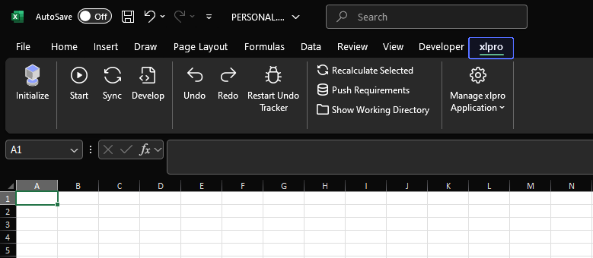
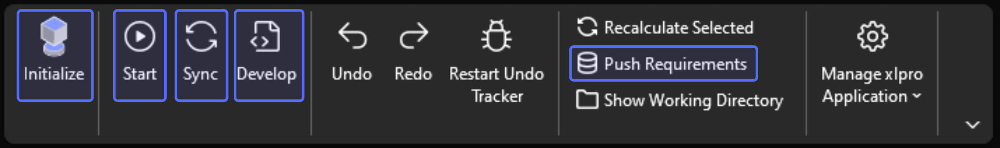
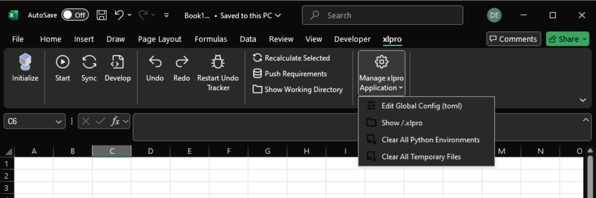
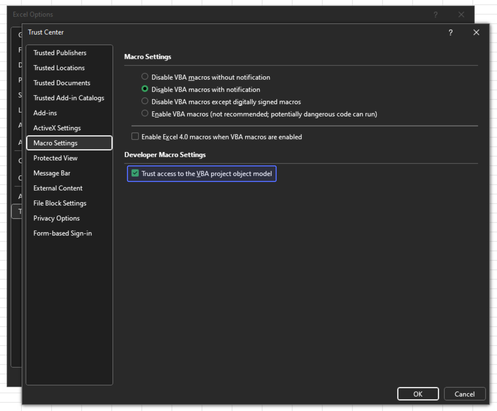

Documentation
The Ribbon
After successful installation, the xlpro ribbon will appear in Excel. The ribbon is used to control the xlpro desktop application and the main interface for the end-user.

The primary workflow for xlpro from Excel is:
Initialize(or reinitialize) the workbook.Startthe calculation server.Syncyour code to the server when it changes.Develop(and debug) the code in VSCode.Pushyour environment configuration to the server.- Distribute your project.

Initialize
Pressing the Initialize button opens a prompt to configure the initalization. This achieves one of the following:
- Configures the active workbook as a new xlpro project.
- Configures a matching Python environment for a pre-configured project.
Info
This spawns a console window which lets you configure the Python interpreter and will install any required packages. When re-initializing an existing project, you should match the Python version (you cannot accidentally use the wrong version) and say yes when prompted to install any additional dependencies (otherwise the project won't run!)
Start
Pressing the Start button will start a new xlpro Python calculation server for the active initialized workbook. This server process handles all function and subroutine requests coming from Excel, and is tied to the workbook.
Use this for the following:
- To start the project
- If your Python environment/dependencies change, e.g. you ran
pip install - If you need a hard reset of the calculation server, e.g. server crash
Manual Sync
The Start action attempts to also Sync. Sometimes this step is skipped in the case where Excel is inaccessible, e.g. locked in a dialogue. You may need to manually sync.
Restarting will Close any Running Server
Pressing Start will close any equivalent, live process, so you don't need to worry about closing the previous instance before restarting.
Sync
Pressing the Sync button performs a soft-reset of an already running calculation server. Use this button to wipe the calculation cache or to re-load your Python files.
Use this for the following:
- Your source files change, e.g. you register a new function in
functions.py. - You want to clear all cached values.
- The
Startsequence did not trigger its internalSynccall (rare).
Develop
Pressing the Develop button will open the xlpro project folder in VSCode.
Debugging Support
Note that VSCode debugging is supported natively, see the Debugging Guide for more information.
Push Requirements
The Push Requirements button pushes the current state (requirements.txt, .python-version) of the project's Python interpreter to the *.xlpro folder.
If you are unfamiliar with Python, these two files essentially define the recipe which xlpro will read to Initialize an exactly matching environment.
Note
For example if you pip install a package, you would want to push the new interpreter state to reflect the necessary dependencies to run the project.
Distribution
xlpro operates by placing all code and configuration files in an adjacent folder to the workbook. E.g. Book1.xlsx will have a Book1.xlsx.xlpro/ folder.
This *.xlpro folder contains all the necessary information for someone else to recreate your Python environment in one click. Simply share the workbook and folder together, e.g. in a .zip file, and someone else can replicate your project exactly.
Configuration
xlpro's desktop application configuration is stored in a config.toml file in the installation directory. There are a few options here, but the only critical one is VSCODE_PATH, which specifies how the Develop button can open VSCode for you to write your code.
If you haven't already configured your VSCODE_PATH, refer to the Hello World (Step-by-Step) video example video walkthrough, just note you may need to find the path to VSCode on your machine.
Configuration settings can be found in the drop-down shown. Press the Edit Global Config button in the Excel ribbon to open the config.toml file.

Visual Studio Code Path Configuration
If the user has not added code.exe to PATH, you will see an error window when pressing the Develop button.It is necessary to manually point xlpro to the VSCode executable (generally Code.exe) in the config.
# Default (assumes code.exe is in your PATH)
VSCODE_PATH = "code.exe"
# Custom (use this if the above is not configured in your PATH)
VSCODE_PATH = "path/to/code.exe"
VSCODE_PATH = "path\\to\\code.exe" # Escaped backslashes
Where is code.exe?
Navigate to the 'Visual Studio Code' shortcut, probably via the start menu or desktop, and Right-Click > (Open File Location) > Properties > Target to show the path. Copy this and paste into config.toml.
The path depends on how VSCode was installed, but typically looks like one of the following:
Escaped Characters
Like most formats, the toml file type uses the backslash \ character for escape sequences. When copying a path from Windows, you will need to replace all of the \ path separators with \\ or / for the file to parse correctly.
Trust Access to the VBA Object Model
xlpro dynamically generates VBA code which accesses Python functions custom functions. This requires access to the VBA Object Model to add the generated code on the fly.
Follow these steps to trust VBA model access.
- Start Excel
- Open a workbook
- Click
File>Options - Navigate to the
Trust Centertab - Click
Trust Center Settings... - Navigate to the
Macro Settingstab - Check the box
Trust access to the VBA project object model
